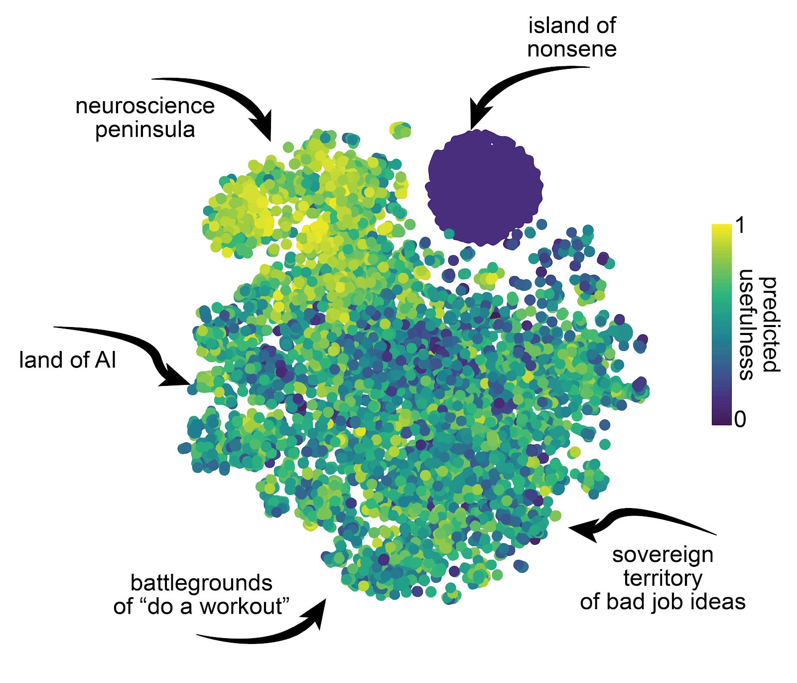
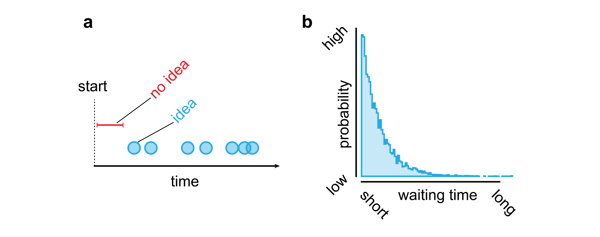

minimalpriora spinoff |
Updated | ||
|---|---|---|---|
| Author | Jan Kirchner | ||
A prototype for automatic idea generation.
In On Scaling Academia I made the case that automatic research , i.e. AI-supported & scalable application of the scientific method, might be great. My argument went like this,
However, many things “might be great”[1], but most aren’t tractable. Does automatic research fall into that category? It’s tempting to tackle that question from the metaphorical ivory tower and to get lost in definitions and speculation. That’s not my comparative advantage[2], I prefer getting excited and building things. In this spirit, I’ll “code first, ask questions later”. Instead of doing all of research at once, I focus on a central aspect of research, idea generation , and present some of my initial experiments and experiences with automating idea generation.
[2]
A previous, much more wordy version of this post was stuck in “draft” mode for a very long time.
[1]
World peace, ending hunger, total equality (you pick which kind), infinite animal-suffering-free on-demand-ice cream, and all the wishes from the “Open-Source Wish Project”
The first insight is that having ideas is really easy. The problem is having good ideas[3]. When you feel like you can’t come up with any ideas, you probably can’t see the forest for the trees. Generating ideas is a combinatoric process: take two things (or more), combine them, and, voilà, Clown Dentists, West Dakota, and Halloween in January[4]. People working on computational creativity call this “pastiche” and distinguish it from “real creativity”. But let us not be deterred by that, we’ll start philosophizing once we’re done coding. Perhaps we will see a path forward once we know how to generate pastiche at scale.
[4]
Taking a list of ideas from some of the funniest writers is probably not the best way to make this point. However, the ideas that I come up with (combined keyboard & mouse, banana telephone, microphone shoes) are so lame, they are making my point too well.
[3]
I think this distinction is the easiest way to resolve the
tension between Stephen Malina et al. writing
” Empirically, all our aspiring founder friends are
desperate for startup ideas, with few managing to land on
something worthwhile, and all our scientist friends are desperate
for research ideas. ”
and me writing
” I could come up with a research program that keeps 1000s
of people busy. ”
I totally could keep them busy. I’m much less certain if
I could get them to do anything useful.
“Pastiche at scale” happens to be one of the many nicknames of IAN, a large language model fine-tuned of my personal notes and the papers that I read. Given a prompt, IAN will produce multiple possible continuations, kind of like the “autocomplete” feature on smartphones only more so. Prompting IAN with
Text within this block will maintain its original spacing when published
_Here is a list of interesting project ideas: 1._
produces pastiche gems like
Text within this block will maintain its original spacing when published
_I want to go to medical school_Text within this block will maintain its original spacing when published
_Are there any ways in which the planning fallacy can be helpful?_Text within this block will maintain its original spacing when published
_Build a service that delivers toilet paper to your home._Text within this block will maintain its original spacing when published
_Investigate how neuromodulators affect the formation and function of dendritic spines._Text within this block will maintain its original spacing when published
_Build a band name for your friends and make T-shirts._Text within this block will maintain its original spacing when published
_A camera that takes a picture whenever it detects that someone is yawning._
And a lot more. Making IAN generate pastiche for 24 hours results in ~10,000 “proto-ideas”. I call them proto-ideas because quality varies a lot[5]; sifting through all of them is more work than coming up with proper ideas myself. This leads us directly to the next step.
[5]
f.e. “On Being Prepared” - by Impossible Things, Do a workout, Draw a picture of a religious situation from scratch.
The second insight is that distinguishing nonsense from ideas is easy. I can tell if a proto-idea is nonsense in less than a second, which is usually a good indicator that the process can be automated. The solution that I came up with is a logistic regression model on a semantic embedding of the proto-idea, that is trained online through an interface I threw together:
This video shows the interface after I’ve trained it for a few hundred examples, and the “predicted usefulness” (0=nonsense, 1=idea) has already converged pretty well. In fact, when I map the proto-ideas into a low-dimensional space, we can see a bit of organization emerge.
tSNE projection of semantic embedding of proto-ideas. Color indicates usefulness of proto-ideas as predicted by logistic regression model.
As you can see, the regression has learned that ideas from the neuroscience peninsula tend to be the most useful for me[6].
[6]
Learning this is not too hard, a fuzzy keyword would probably also work.
Text within this block will maintain its original spacing when published
_A project on how the brain makes use of prior knowledge to guide decision-making._Text within this block will maintain its original spacing when published
_Development of a new theory of cortical computation that incorporates topographic organization, feedback control and multi-sensory integration._Text within this block will maintain its original spacing when published
_To understand how the brain stores ideas hierarchically, we could study how it works when it can't find an idea and how it works when it can._
But also in other regions of semantic space, there are ideas with high predicted usefulness. Here is a selection:
Text within this block will maintain its original spacing when published
_Write a book in which each chapter is a different type of cinema, For example, the first chapter might be in the style of a documentary, the second chapter mainstream cinema, and the third chapter experimental cinema._Text within this block will maintain its original spacing when published
_Have an online game night - This could be a game night that you host on Zoom and that people can join - You could do it every week and rotate hosts_Text within this block will maintain its original spacing when published
_An AI system that plays the role of a creative director for an orchestra._Text within this block will maintain its original spacing when published
_To make a game where you have to help a scientist find a cure for a disease._Text within this block will maintain its original spacing when published
_[The Tale Of Gandhi](https://kirchner-jan.github.io/minimalprior/posts/universalprior/the-tale-of-gandhi-and-the-devil) And The Old Witch, The Tale Of Gandhi And The Two Giants, The Tale Of Gandhi And The Flying Mountain, The Tale Of Gandhi And The One Who Would Not Speak, The Tale Of Gandhi And The Loveless Kingdom, The Tale Of Gandhi And The Three Ghosts, The Tale Of Gandhi And The Two Dragons Who Were Best Friends_[7] , …
[7]
The Tale Of Gandhi was always supposed to be a series.
The third insight is that the quality of an idea is not an intrinsic , but an extrinsic property. The quality does not sit within the idea, it is determined by us from the outside. And these judgments are subjective[8], so there is no universal way to generate great ideas.
[8]
“Getting a tattoo”, “Becoming an actor”, “Starting a stamp collection”, “Investing in cryptocurrency”, are all either great or terrible ideas depending on what you value.
However, once you do know which criteria you care for, identifying a great idea reduces to a constraint satisfaction problem; and we have great tools for solving those. In the simplest form[9] we don’t even have to resort to anything fancier than search. The algorithm looks something like this:
[9]
If all the constraints are just binary “satisfied” or “not satisfied” constraint.
while not found:
idea = next_idea()
if constraints(idea):
return ideaI’ve implemented this with a semantic search, followed by a ranking according to usefulness predicted by the regression[10].
[10]
I can imagine straightforward extensions of this where I layer Boolean search on top of the output of multiple semantic search queries, but probably there is a more elegant way to implement this directly on the semantic embedding.
The actual constraints arising in a research project are substantially more complicated than just semantic similarity[11], but the central logic of this approach remains unchanged: generate a lot of ideas and filter. The comparative advantage of computers is that they can do a simple thing much faster and much longer than a human can; generating a ginormous dataset of proto-ideas is not feasible for humans, but “easy”[12] for computers. This is essentially the same strategy that led to superhuman chess performance and that only now, after decades, is supplanted by more data-efficient methods.
[12]
Given a TPU machine from Google <3
[11]
You want your idea to be novel, fit into your paradigm, appeal to a certain audience, be tractable, neglected, have a high impact-to-effort ratio, etc.
The fourth insight is that while the greatness of ideas is subjective, the greatness of implementations is more objective. You can argue whether some of the “great” ideas I listed above are actually great, but once there is an implementation the nature of an argument changes qualitatively. Once implemented, reality enters the discussion and adjudicates.
I want to write an entire post on how to automate going from idea to implementation, but here is the minimalist workflow that I’m using for now:
There are fantastic tools for some of these steps, and for the rest, I have ideas for how to build the necessary tools. I’ll keep you posted on how this goes.
According to “code first, think later” we’ve now reached the “think” part. You can probably tell that I am skeptical of people who declare that creativity is uniquely human. These voices are less numerous now that AI-generated poetry, art-on-demand, and music are actually enjoyable[16]. Perhaps there is still a way of drawing concept boundaries that make creativity uniquely human, but I’m skeptical that those concepts will end up being very useful.
[16]
With rather primitive technology, compared to what is possible.
I believe there is substantial confusion about where ideas come from. WikiHow provides a representative answer to the question “How to Come Up With Ideas”. They recommend the following three-step process:
I have a hard time putting my feelings about these illustrations into words.
Step two, the “gestation period” appears magical. Mathematicians have perfected the art of gestation:
_How does mathematical creativity take place? Where do good ideas come from? Of course there is no single answer, and as we all get older we wonder more and more why we don’t have all the great ideas that we had thirty years ago.
There is general agreement, however, that one of the best ways to think about a problem is not to think about it. That is to say, you work hard and concentrate all your effort on the task for a protracted period of time; but then you let it go. Do something else: mow the lawn, go for a walk, take a shower, have a shave. The mind still percolates away, trying some things, discarding others. Often it happens that the solution to the problem will then just pop up unexpectedly.
Ron Graham, late of Bell Labs and now a Distinguished Professor at U.C. San Diego, gets some of his best ideas while juggling or performing gymnastics. Persi Diaconis (1945- ) of Stanford lets his ideas gestate while he is creating and performing new magic tricks. Henri Poincare used to go on trips to the seashore. Isaac Newton worked in his garden. […]_
I see the value of a healthy balance as much as the next person, pain is not the unit of effort. In fact, I believe that maintaining some balance between intense work and leisure is critical for sustained high research output. I still have a hard time believing that we will have to teach computers how to juggle as a necessary component of the creative process. And also in humans, creativity does not always require a gestation period. A good brainstorming session, or just thinking for five minutes by the clock about a problem, can solve a substantial portion of problems.
Instead of postulating something magical that occurs through the interaction between the subconscious and the conscious[17], I believe there is a much more parsimonious explanation: What if (as argued above) coming up with good ideas is simply a search problem where possible ideas are proposed, evaluated and (most of the time) rejected? If each proposed idea only has a small probability of being a “hit”, then the distribution of arrival times of ideas is a Poisson process, and the distribution of waiting times in between ideas is an exponential distribution. As a consequence, finding a good idea simply takes a lot of time sometimes, especially when the probability of a hit is small. Having a “dry spell” of good ideas is just what we would (sometimes) expect under this model.
[17]
Quote: For most of any given day we only use our conscious brain, representing only a surprising 13% of the brain’s capacity. The other 87%, our subconscious brain goes unused because when we are stressed and hear ourselves say “I don’t have time to think,” the door between our conscious and subconscious brain closes completely. When this door is closed, access to all of that experiential and creative stimulus in the subconscious brain is denied, therefore, no big ideas. Every meal you’ve ever eaten, place you’ve ever visited, person you’ve ever met, book you’ve read, movie you’ve seen–they’re all back there in your subconscious brain waiting to make unrelated connections back to the challenge at hand and to support the creation of that big innovation.
 a Example of a Poisson point process, blue circles indicate generated ideas as a function of time. Red bar highlights time period at beginning of simulation where no ideas were generated. b Distribution of waiting time lengths (red bar in a ) pooled across simulations. Notice the long tail.
Disengaging from the problem then is nothing else than pressing the “fast forward” button. The process of searching for a good idea continues to “run in the background”, perhaps with reduced resources[18], and only rises to attention when a “hit” (or something looking a lot like a hit) was found. I suspect we can explain away the apparent “magical” component of the creative process this way. But doing that is a lot less exciting than “coding away” the confusion, so I’ll stick to that instead.
[18]
As long as the time spent disengaged is much longer than the time actively working on the problem, reduced resources do not matter so much.
[13]
This is super important. There will be a very strong pull to extend the expansion phase. Don’t give in. This is the point where it’s decided whether you hit your deadline or not.
[14]
These two phases are the ones I tried to characterize in “Soldiers, Scouts, and Albatrosses”, although I’m not sure if I hit the nail on the head there.
[15]
Be honest with yourself here. Again, the temptation is big to carry along that beautiful aspect of the project that you have sunken a ton of time into, but which simply doesn’t mash with anything else. Throw it away. (Into your drawer of “future project ideas” that you will never open again).